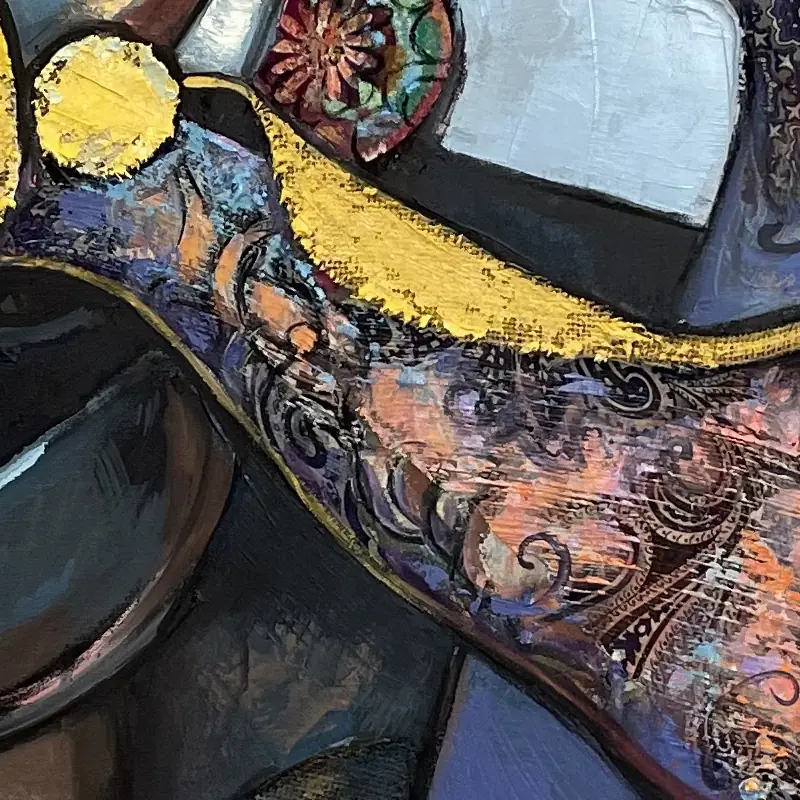

Silent Axis
- Año
- 2020
- Técnica
- Técnica mixta sobre lienzo
- Medidas (alto × ancho)
- 150 × 120 cm
Silent Axis, 2020: una obra en técnica mixta sobre lienzo del pintor cubano-noruego Ramón Eduardo Haití Filiu.
Consultar esta obraSilent Axis, 2020: una obra en técnica mixta sobre lienzo del pintor cubano-noruego Ramón Eduardo Haití Filiu.
Consultar esta obraDetalleRecorte de 800 píxeles de la fotografía original, a resolución completa.
